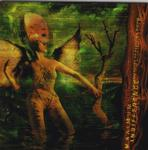

| Artist: | Maximum Indifference |
| Title: | The Transmutation Of Supposed Angels Or Beings That Were Once Girls |
| Label: | Botched Records MI02 |
| Length(s): | 67 minutes |
| Year(s) of release: | 2000 |
| Month of review: | [01/2001] |
| 1) | Beware The Glabyglop | 4.54 |
| 2) | Kuang Grade Mark Eleven Penetration Program | 6.06 |
| 3) | Jack Palance The Ninja | 3.30 |
| 4) | Wedge Of Spite | 4.03 |
| 5) | Aura And Armament | 3.21 |
| 6) | Swyncro | 4.19 |
| 7) | And Your Point Is? | 5.17 |
| 8) | Client Weasel Tactics | 3.04 |
| 9) | Sleep Hammer | 5.41 |
| 10) | Bad Mind Does Does Not | 3.07 |
| 11) | Halation | 9.38 |
| 12) | Apparatus | 13.22 |
Kuang Grade Mark Eleven Penetration Program is the next one up. The band continues more or less in the same style with plenty of room for the rhythm section, some ethereal guitars over a heavy driving backdrop. What is most likable I think are the strong melodic chords that pervade the music. Notwithstanding the heaviness, this is no plain jamming a la Liquid Tension Experiment or similar things, but well-written ballsy compositions brimming with energy and melody. There is also time for quieter moments when, for instance, the acoustic guitar sets in. Then again washes of cymblas inundate the unwary listener. Moodwise the band also has a lot going for them.
Jack Palance The Ninja goes back to the fifties. Parts of the song are typical of The Shadows (if you are too young for that, think of the atmosphere in the music of Chris Isaak), but of course in a much heavier fashion with quick percussion. Takes a little getting used to.
Wedge Of Spite opens with menacing drums, estranging keyboards before moving into a midtempo rock part. The guitar sound of Bladek takes on definite forms: in his melodic parts he has a sound which is both cold and sunny, high and brite. The tension evoked in the atmosphere may remind some of King Crimson, but actually the music is much more accessible. In this song for instance, the band even has some punk riffs incorporated.
After the bouncy Aura And Armament, Swyncro is also a relaxed track, slow moving with thoughtful bass playing and rolling percussion.
And Your Point Is? opens with filmic keyboards and later a very catchy guitar melody. It seems I am getting used to the heaviness, because like the previous two tracks, the atmopshere continues to non-aggressive. That was different earlier on. The music slows down a bit in the middle with low grumbling bass and sparser percussion. The song continues with a strong drive. Client Weasel Tactics is a playful piece, quick and flashy with a tempo change in the middle. Then we are back for a while to driving riffs. Short, but plenty of variation in this one.
Sleep Hammer adds little new to the style, but incorporates some great guitar melodies. They do sound a bit familiar, but I can not easily place them. Bad Mind Does Does Not is short, fast and memorable.
The final two track make up one long one. The first part Halation opens with spoken words that evoke a dark sinister atmosphere (comparable to Jeff Wayne's War Of The Worlds), complete with spooky sounds in the back. The band shows that a future in making horror soundtracks lies not outside their capabilities. The second part and final track on the album signifies a return to the driving music of the band. Some great ethereal sounding melodies make this into a perfect signature piece for the band. The middle has some nice atmospherics and in fact the middle part is quite slow, but gets heavier on the way. Halfway the music picks up some speed as well and crashes down with an overwhelming finale.